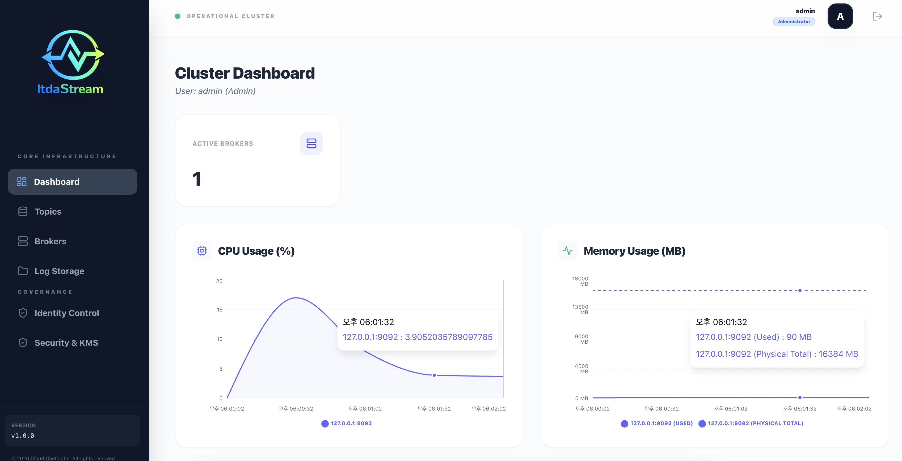

Getting Started
This shows how to install ItdaStream on local to experience it quickly.
Prerequisites
Because ItdaStream is written in Java, Java 17 needs to be installed on local.
Install ItdaStream on Local
ItdaStream distribution can be downloaded like this.
curl -L -O https://github.com/cloudcheflabs/itdastream-pack/releases/download/itdastream-archive/itdastream-1.0.0.tar.gz
And untar the downloaded package.
Run Zookeeper.
ItdaStream needs a S3 bucket where all the logs will be saved. After a bucket and the S3 credentials are created, run the broker server with replacing the following environment variables with yours.
# master key.
export ITDASTREAM_MASTER_KEY="MustBeChanged01234567890123456789012345678901"
# s3 connection info.
export ITDASTREAM_STORAGE_S3_ENDPOINT_URL=endpoint
export ITDASTREAM_STORAGE_S3_BUCKET_NAME=bucket
export ITDASTREAM_STORAGE_S3_REGION_ID=any-region
export ITDASTREAM_STORAGE_S3_ACCESS_KEY_ID=access-key
export ITDASTREAM_STORAGE_S3_SECRET_ACCESS_KEY=secret-key
# start broker.
bin/start-broker.sh
Environment variable
ITDASTREAM_MASTER_KEYthat must be at least 32 characters needs to be exported when running ItdaStream broker servers.
Visit admin page of ItdaStream.
First initial admin user and password is admin / admin, after that you need to change the initial password.

Run Console Producer and Consumer
In order to experience to send and receive messages to/from ItdaStream,
first run console consumer.
In another terminal, run the console producer, and type some messages to send.
And then, you will see the messages received in the console consumer.
Stop Servers
Stop zookeeper and broker.